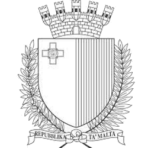
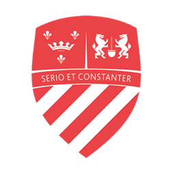

Hello and welcome! My name is Reno Yuri Camilleri, and I am an Artificial Intelligence engineer
with a deep-rooted passion for advancing the field of intelligent systems.
I am currently pursuing a Doctorate (PhD) in Artificial Intelligence at the University of Malta,
where I
also serve as a Researcher. Balancing academic study with hands-on research allows me to
contribute meaningfully to both theoretical advancements and real-world applications in AI.
My academic and professional journey has equipped me with a robust foundation in a wide array of AI
disciplines. These include, but are not limited to: Reinforcement Learning, Genetic Algorithms, Natural
Language Processing, Computer Vision, and Semantic Analysis. I am especially driven by the
challenge of designing intelligent systems that can learn, adapt, and interact with the world in
human-like ways.
As a professional, I approach every project with full commitment and a meticulous attention to detail. My
strong problem-solving skills, combined with a collaborative mindset, make me a valuable asset to any
team or initiative. I thrive in environments that encourage innovation, continuous learning, and
meaningful collaboration.
Whether it is contributing to cutting-edge research, developing intelligent solutions, or working within
interdisciplinary teams, I am passionate about harnessing the power of AI to solve complex problems and
create impactful change.
Resume
Work Experience
Dec 2024 — Current
Research Support Officer
University of Malta
Msida, Malta
During my time as a Research Support Officer, I worked on various projects of
the
University of Malta, primarily: SWIM-360 a research initiative to develop
explainable AI-powered swimming analysis pipelines, and dashboard for coaches.
Back-End Server Development
Front-End Website Development
Software Infrastructure
Databases
Explainable Systems
Applied Artificial Intelligence
Jul 2026
Bootcamp Tutor
University of Malta
Msida, Malta
I served as a tutor for the “xPloring Intelligence - A Bootcamp on Us and Tech”,
bootcamp at the University of
Malta.
Artificial Intelligence
Teaching
Jul 2025 — Sep 2025
Bootcamp Tutor
University of Malta
Msida, Malta
I served as a tutor for the “xPloring Intelligence - A Bootcamp on Us and Tech”,
as well as the "Tech Trek - A Teen Tech Adventure" bootcamp at the University of
Malta.
Artificial Intelligence
Teaching

Jul 2024 — Sep 2024
ICT Summer Internship
MHAA
Pietà, Malta
I worked for the Information Management Unit for the Ministry for Health and
Active Ageing.
IT Management
Clerical Duties
Jul 2024 — Sep 2024
Bootcamp Tutor
University of Malta
Msida, Malta
I served as a tutor for the “xPloring Intelligence - A Bootcamp on Us and Tech”,
as well as the "Tech Trek - A Teen Tech Adventure" bootcamp at the University of
Malta.
Artificial Intelligence
Teaching
Jul 2023 — Sep 2023
ICT Summer Internship
MITA
Santa Venera, Malta
I worked under a Senior Solutions Architect and was exposed to a variety of
software, as well as was taught a variety of details related to building a
secure system, as well as the basic concepts of cyber security.
PRTG
Solutions Architecture
Computer Networking Principals
Windows Datacenter Server Setup
Basic Server Management
Microsoft Azure
Jul 2022 — Sep 2022
ICT Summer Internship
University of Malta
Msida, Malta
I worked under Dr. Dylan Seychell at the University of Malta, where I helped
develop AI in Media related projects.
Web Development
Natural Language Processing
Sentiment Analysis
Data Mining
Jul 2021 — Aug 2021
ICT Summer Internship
SCSA
Santa Venera, Malta
I did clerical work at the Social Care Standards Authority.
Digital Archive Management
Physical Archive Management
Jun 2020 — Aug 2020
Summer Office Clerk
ARMS Ltd.
Hamrun, Malta
I did clerical work at the Automated Revenue Management Services (ARMS) Ltd.
Clerical Duties
Customer Support
Jul 2019 — Sep 2019
Summer Office Clerk
Ministry of Tourism
Valletta, Malta
I was tasked with giving directions, and assisting tourists in Valletta.
Jul 2018 — Sep 2018
Summer Office Clerk
MHAS
Valletta, Malta
I worked for the Ministry for Home Affairs, Security and Employment as an office
clerk.
Clerical Duties
Education and Training
2024 – Current
PhD in Artificial Intelligence
University of Malta (Msida, Malta)
2021 – 2024
Bachelor of Science in IT (Artificial Intelligence)
University of Malta (Msida, Malta)
Grade: First Class
2023
Unity Certified Associate - Game Developer
Unity Technologies
2023
Azure AI Fundamentals
Microsoft Certified
2023
First Aid Certificate
St John Malta

2018 – 2020
Matriculation Certificate
St. Aloysius College (Birkirkara, Malta)
A Levels: Computing & Pure Maths